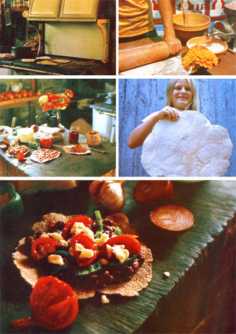

What kind of bread can be made in less than an hour by even inexperienced bakers . . . costs next to nothing . . . requires no oven . . . complements almost any food you can name . . . and is so delicious you'll have to lock the refrigerator to keep the snackers away?
A while back, a friend of mine threw a dinner party. And that get-together was distinguished-for me at least-by the presence of some round, lightly browned tortilla-like wafers nestled among the piles of barbecued chicken, refried beans, homemade whole wheat bread, fresh garden vegetables, eye-catching salads, and assorted condiments.
One of the guests at that festive feast-a Sikh from India-first sampled all the foods, then pointed to the stack of wafers and pronounced: "This is best!" He was biased-of course-because those thin, crispy patties of unleavened bread were chapatis (also spelled chipatis, chepattis, or chupattis) ... which have been a staple food in his homeland for thousands of years! Still, even though I'd chewed my first chapati only a few months earlier, I had to agree with the Sikh: Of all the breads I have eaten, I too like chapatis the best.
The chapati is a close cousin to the tortilla of Mexico, the Jewish matzo, Arab pocket bread, American hoecakes and spoonbread . . . and yes . . . even pancakes, waffles, English muffins, and pizza! All these-and many more-are flat breads . . . perhaps the oldest and most basic breads in existence. Nearly every culture has its own version of flat bread, which-in its simplest form-consists of nothing but flour and water formed into thin, round wafers. The discs are then quickly cooked on hot stones, coals, griddles . . . or even the tops of wood stoves!
While there has been-and will continue to be-many a fallen loaf of yeast bread in the annals of baking, chapatis seem virtually foolproof . . . even for confirmed kitchen klutzes! In five years of baking these Indian delicacies I have never made a bad batch (though no two have ever turned out quite the same). And, since chapatis are so easy to make, you can whip up a week's supply-or more-in just a couple of hours. (If any are left over after you've wolfed down half a batch or so, wrap them in airtight packages and store 'em in the fridge or freezer. They keep just as well as ordinary bread, but take up much less space.)
Combine 2 cups of whole wheat flour, 1/2 to 1 teaspoon of salt, and 2 to 3 tablespoons of clarified butter or cooking oil in a large bowl. Mix thoroughly, then gradually add 1/2 to 1 cup of water (each batch varies) until the dough is smooth, elastic, and moist . . . but not sticky! Then rub a small amount of oil on a breadboard-or other working surface-to prevent sticking, and knead the dough for at least 10 minutes (the more you knead, the lighter the chapatis).
Although you can begin to form these tasty flat breads at once-if you wish-some cooks prefer to cover the dough and let it rest anywhere from five minutes to an hour. There's no set rule here, though (there never is when you're making chapatis), so experiment until you discover the procedure you prefer.
When you're ready, divide your dough into roughly 12 egg-sized pieces. Flatten each one with the heel of your hand, dust both sides lightly with flour, and roll the lumps into thin, round wafers about six inches across. (The thickness of a chapati has a lot to do with its flavor . . . the thinner each one is, the more nutlike and crackery it tastes. Chapatis thicker than 1/4 inch are too dense and doughy for most palates.)
You can crank out chapatis at a pretty good clip once you get the hang of it . . . especially if one person rolls the dough while another cooks each disk as it comes off the assembly line. If you prefer to make a whole stack of the wafers before headin' for the stove, however, be sure to dust each chapati with flour . . . or separate it from its neighbors with waxed paper. Otherwise, you're liable to end up with one big blob of congealed dough.
Cook the chapatis at low to medium heat on a greaseless frying pan or griddle . . . about 30 seconds to a side-or until light brown splotches appear-for bread flexible enough to wrap around the filling of your choice. Bake each disk longer if you want crisp, Crackly wafers for tostadas or imitation tortilla chips. TIP: A large cookie sheet placed across two burners of your gas or electric stove will increase your production. Plus you can bake a couple more of the chapatis on another cookie sheet in the oven at the same time (set at 350°-400° or slightly above "moderate" on a wood stove).
For MOTHER types who prefer wood stoves to gas or electric ranges-or who just plain don't have gas or electricity-chapatis are ideal . . . especially for beginners who haven't yet mastered the fine art of baking bread in an old, cantankerous country oven (for tips on this almost-lost art, see MOTHER NO. 7, pages 63-68). Just sweep off the top of your stove, crank up the fire to about medium heat, and cook your chapatis right on the surface of the old wood-burner itself! You can tell if the heat's right by sprinkling a little flour across the top of the range: If it smokes, back off the heat a bit and test again.
Some folks like their chapatis "hot off the stove", dressed up with only a little melted butter and perhaps a bit of salt. Others prefer to wrap 'em around hot refried beans and melted cheese (chapati burrito) or a peanut-butter-and-jelly filling (chapati PB & J) or almost anything else that they suspect might be tasty. As I suggested earlier, crisp-fried chapatis are also ideal for tostadas: Just pile each one high with refried beans, cheese, lettuce, tomatoes, avocados, meat if you wish, and generous amounts of your favorite taco sauce (either mild or hot).
You can even make imitation tortilla chips. Just include about one-third as much com flour as wheat when you mix up your dough and add grated cheese, garlic powder, oregano, and finely grated onion. Cut the uncooked chapati into triangular wedges and fry until crisp.
It's hard to go wrong with chapatis-no matter what you do-so let your imagination run free! Maybe the following suggestions will get the creative juices flowing:
[1] I heartily recommend experimenting with the substitution of other kinds of flour in addition to whole wheat: corn, rye, buckwheat, rice, soybean, oat, and the like. Each alone or in combination yields subtle flavor variations that chapati connoisseurs-as you'll quickly become-learn to recognize and appreciate. If you do decide to try some other flours, however, remember to add a cup of wheat flour for every four or five cups of cornmeal or what have you . . . because only wheat flour contains the gluten necessary to hold the chapatis together.
[2] For more flavor and nutrition, you can substitute milk for water . . . and even toss in a couple of eggs to boot. Either sour milk or buttermilk adds a distinctive flavor of its own, too.
[3] Try grinding up some lentils or pinto beans into flour for your chapati batter. The resulting bread is both loaded with protein and has a refreshingly different kind of flavor.
[4] Add a few tablespoons of ground sunflower seeds or other nuts to your dough to enhance the already nutlike flavor of the "more conventional" grains.
The list of these possible variations can go on and on and is bounded only by a cook's imagination and taste. The more you eat chapatis, in short, the more you'll think of new ways to make and serve them.
The chapati has been around for thousands of years and will probably continue to be popular for thousands more, because it provides simple, direct access to the unparalleled goodness and flavor a of roasted grain. Besides ..
what other staple foodstuff do you know that turns out so consistently delicious . . . even when you make a "mistake" mixing it up?
|
 PHOTOS BY BILL OAKLEY |
|
|